Change Detection?


Change Detection Goal:
Data Projection*
* Change and its detection in JavaScript frameworks by @teropa

What causes change?
<h1>{{firstname}} {{lastname}}</h1>
@Component()
class App {
firstname:string = 'Pascal';
lastname:string = 'Precht';
changeName() {
this.firstname = 'Brad';
this.lastname = 'Green';
}
}
@Component() class App { firstname:string = 'Pascal'; lastname:string = 'Precht'; changeName() { this.firstname = 'Brad'; this.lastname = 'Green'; } }
Application state changed!
@Component()
class ContactsApp {
contacts:Contact[] = [];
constructor(private http:Http) { }
ngOnInit() {
this.http.get('/contacts')
.map(res => res.json())
.subscribe((contacts) => {
this.contacts = contacts;
});
}
}
@Component() class ContactsApp { contacts:Contact[] = []; constructor(private http:Http) { } ngOnInit() { this.http.get('/contacts') .map(res => res.json()) .subscribe((contacts) => { this.contacts = contacts; }); } }
Application state changed!
Things that cause change
- Events -
click,submit, ... - XHR - Fetching data from a remote server
- Timers -
setTimeout(),setInterval()
Who notifies Angular?
Zones
Let's understand JavaScript first.
Call Stack

Call Stack
Call Stack

Call Stack
Call Stack
Call Stack
Call Stack
Call Stack
Call Stack
What about async?
(Because... JavaScript)
Event Loop

Event Loop
Event Loop

Event Loop
Event Loop
Event Loop
Event Loop

Event Loop

Event Loop

Event Loop

Event Loop
Event Loop

Event Loop

Event Loop
What the heck is the event loop anyway?
Zones to the rescue
Zones can perform an operation each time code enters or exits a task.
foo();
setTimeout(doSth, 0);
bar();
zone.run(() => {
foo();
setTimeout(doSth, 0);
bar();
});setTimeout() at this time is already monkey-patched
Zones hooks can be extended
zone.fork({
name: 'loggerZone',
onEnter: () => { console.log('start'); },
onLeave: () => { console.log('end'); }
})
.run(() => {
foo();
setTimeout(doSth, 0);
bar();
});Zones hooks can be extended
zone.fork({ name: 'loggerZone', onEnter: () => { console.log('start'); }, onLeave: () => { console.log('end'); } }) .run(() => { foo(); setTimeout(doSth, 0); bar(); });
Angular has its own Zone
NgZone is a forked zone with additional APIs based on Observables
onMicrotaskEmpty()- Emits after turn is doneonError()- Emits when error occoured- ...
Again, what notifies Angular?
this.zone.onMicrotaskEmpty
.subscribe(() => {
this.zone.run(() => this.tick() })
})tick() {
this.changeDetectorsRefs
.forEach((ref) => ref.detectChanges())
}More on that here
There's way more we can do with Zones.
Change Detection


Each component has its own Change Detector


Change Detection is always performed in the same order starting from root
Demo
How fast is it?
Victor Savkin, Angular Core Team @Google
Angular generates VM friendly code for better performance
(Can perform hundreds of thousands of simple checks in a few milliseconds)
Facts
- Change Detection Graph is a directed tree
- Way more predictable
- Gets stable after a single pass
- Generates VM friendly code for better performance
Smarter Change Detection
Mutable Objects
@Component({
template: '<v-card [vData]="vData"></v-card>',
directves: [VCardCmp]
})
class VCardApp {
constructor() {
this.vData = {
name: 'Christoph Burgdorf',
email: 'christoph@thoughtram.io'
}
}
changeData() {
this.vData.name = 'Pascal Precht';
}
}@Component({ template: '<v-card [vData]="vData"></v-card>', directves: [VCardCmp] }) class VCardApp { constructor() { this.vData = { name: 'Christoph Burgdorf', email: 'christoph@thoughtram.io' } } changeData() { this.vData.name = 'Pascal Precht'; } }
@Component({ template: '<v-card [vData]="vData"></v-card>', directves: [VCardCmp] }) class VCardApp { constructor() { this.vData = { name: 'Christoph Burgdorf', email: 'christoph@thoughtram.io' } } changeData() { this.vData.name = 'Pascal Precht'; } }


Reference is the same, but property could've changed (mutable), so we need to check
Angular is conservative by default and checks every component every single time
Immutable Objects
var vData = someAPIForImmutables.create({
name: 'Pascal Precht'
});
var vData2 = vData.set('name', 'Christoph Burgdorf');
vData1 === vData2 // false
var vData = someAPIForImmutables.create({ name: 'Pascal Precht' }); var vData2 = vData.set('name', 'Christoph Burgdorf'); vData1 === vData2 // false
var vData = someAPIForImmutables.create({ name: 'Pascal Precht' }); var vData2 = vData.set('name', 'Christoph Burgdorf'); vData1 === vData2 // false
var vData = someAPIForImmutables.create({ name: 'Pascal Precht' }); var vData2 = vData.set('name', 'Christoph Burgdorf'); vData1 === vData2 // false
Making a change, always results in a new reference
Reducing the number of checks
Angular can skip entire Change Detection subtrees when inputs properties don't change*.
*We learned that: change = new reference
@Component({
template: `
<h2>{{vData.name}}</h2>
<span>{{vData.email}}</span>
`
})
export class VCardCmp {
@Input() vData;
}
@Component({ template: ` <h2>{{vData.name}}</h2> <span>{{vData.email}}</span> ` }) export class VCardCmp { @Input() vData; }
VCardCmp only depends on inputs
@Component({ template: ` <h2>{{vData.name}}</h2> <span>{{vData.email}}</span> `, changeDetection: ChangeDetectionStrategy.OnPush }) class VCardCmp { @Input() vData; }
Perform change detection on view only if input has changed


Skip subtree, as input hasn't changed
Demo

How I optimized minesweeper using Angular 2 and Immutable.js →
Observables
@Component() // assuming OnPush
class CartBadgeCmp {
@Input() addItemStream:Observable<any>;
counter = 0;
ngOnInit() {
this.addItemStream.subscribe(() => {
this.counter++; // application state changed
})
}
}
@Component() // assuming OnPush class CartBadgeCmp { @Input() addItemStream:Observable<any>; counter = 0; ngOnInit() { this.addItemStream.subscribe(() => { this.counter++; // application state changed }) } }
@Component() class CartBadgeCmp { @Input() addItemStream:Observable<any>; counter = 0; ngOnInit() { this.addItemStream.subscribe(() => { this.counter++; // application state changed }) } }

Observable reference is still exactly the same,
CD propagation stops
@Component()
class CartBadgeCmp {
@Input() addItemStream:Observable<any>;
counter = 0;
ngOnInit() {
this.addItemStream.subscribe(() => {
this.counter++; // application state changed
})
}
}
@Component() class CartBadgeCmp { @Input() addItemStream:Observable<any>; counter = 0; constructor(private cd: ChangeDetectorRef) {} ngOnInit() { this.addItemStream.subscribe(() => { this.counter++; // application state changed this.cd.markForCheck(); // marks path }) } }

Mark path until root for check

Perform change detection as usual
Restore original state
Demo
One more thing...
Even more control
@Component()
class AnotherCmp {
notifier:Observable<any>;
constructor(private cd: ChangeDetectorRef) {}
ngOnInit() {
this.cd.detach();
this.notifier.subscribe((attach) => {
attach ? this.cd.reattach() : this.cd.detach();
});
}
}
Even more control
@Component() class AnotherCmp { notifier:Observable<any>; constructor(private cd: ChangeDetectorRef) {} ngOnInit() { this.cd.detach(); this.notifier.subscribe((attach) => { attach ? this.cd.reattach() : this.cd.detach(); }); } }